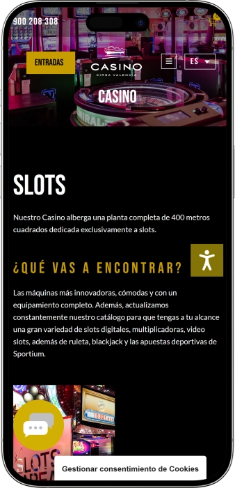

Oferta exclusiva de bienvenida de
Oferta exclusiva de bienvenida de
Casino CIRSA Valencia — casino, póker, shows y ocio
Los mejores casinos
Detalles de bonificación
Casino
Bonos
Rate
Giros gratis
Más info
Conseguir
Ventajas
-
Slots y gastronomía 24 horas sin pausa
-
Juegos de mesa con crupieres cada día
-
Póker cash y sesiones de torneos constantes
-
Jackpots progresivos con pagos muy atractivos
-
Promociones de juego con bonos y tiradas
-
Zonas VIP cómodas para juego privado
-
Espectáculos y ocio nocturno en el complejo
- Casino CIRSA Valencia destaca por unir juego, entretenimiento y buen servicio en un mismo lugar. Es ideal para un plan completo: cenar, jugar y disfrutar de un show. El ambiente funciona tanto para una visita rápida como para una noche larga.
Casino CIRSA Valencia App


Acerca de Casino CIRSA Valencia
El casino se diferencia por combinar juego, gastronomía y espectáculos en un solo espacio. Su formato permite pasar de slots a mesas y póker con total comodidad durante la noche.
- Bono hasta 500 €.
- Jackpots hasta 50.000 €.
- Cashback 10% semanal.
Casino CIRSA Valencia es un complejo de juego moderno con un enfoque de ocio muy marcado. Aquí se siente el pulso de la ciudad, donde la emoción se mezcla con comodidad. Sus interiores transmiten amplitud, luz y energía. Es un lugar adecuado tanto para una visita corta como para una noche completa.
La oferta incluye slots, juegos de mesa y póker. Los crupieres mantienen un ritmo agradable y ayudan a quienes se inician. La parte gastronómica permite hacer una pausa y continuar el plan sin prisas. La agenda de eventos suma ambiente y convierte la visita en una experiencia. Para quienes buscan discreción, existen zonas más tranquilas. En conjunto, es un espacio donde juego, servicio y entretenimiento conviven con naturalidad.
Casino CIRSA Valencia: una noche con estilo, del juego al show
Casino CIRSA Valencia recibe a los visitantes con un estilo moderno y una atmósfera de ocio urbano. En sus espacios se perciben luz, amplitud y un toque premium sin excesos. Es un entorno cómodo tanto para quienes buscan emoción como para quienes priorizan pasar una buena noche. Música, iluminación y distribución acompañan el ritmo del casino sin resultar agobiantes. El resultado es un equilibrio entre ambiente festivo y descanso relajado.
En cuanto a horarios, el concepto está pensado para adaptarse a distintos planes. La zona de slots y la parte gastronómica suelen facilitar visitas a cualquier hora, por eso muchos llegan tarde y alargan la noche. Los juegos de mesa y mesas de cash acostumbran a seguir un horario que encaja con la franja más activa de la tarde-noche. Así, es fácil empezar con copa o cena y después pasar a ruleta, blackjack o baccarat. Ese flujo gusta especialmente a quienes combinan experiencias en una misma salida.
La propuesta de barras suele girar en torno a coctelería y bebidas ligeras que encajan con el ambiente del casino. Es habitual encontrar un formato lounge cercano a la sala de juego para hacer pausas entre sesiones. En días con eventos, el bar se vuelve un punto de encuentro y parte del plan. Para un ritmo más tranquilo, suelen existir opciones de café, bebidas sin alcohol y bocados rápidos. La gran ventaja es moverse entre descanso y juego sin salir del complejo.
El alojamiento no siempre forma parte del propio recinto, pero normalmente hay muchas opciones de hotel en el entorno, desde perfiles business hasta alternativas urbanas cómodas. Esto facilita organizar una noche completa con estancia cercana, sobre todo para grupos o visitas por evento. Muchos optan por hoteles con acceso rápido en taxi o transporte público. Esa elección evita prisas y hace la experiencia más cómoda. Así, Casino CIRSA Valencia encaja bien dentro de una ruta nocturna por la ciudad.
Los eventos y el entretenimiento suelen ser uno de los grandes atractivos. Noches con música en vivo, shows temáticos, cenas con espectáculo y actividades de póker aportan valor más allá del juego. En fechas señaladas el ambiente se vuelve especialmente festivo gracias a la programación. Para empresas o grupos, es una fórmula eficaz para unir gastronomía, conversación y emoción. Incluso sin jugar demasiado, la agenda puede ser una razón suficiente para visitar.
Las promociones y programas de ventajas suelen orientarse a premiar la repetición de visitas. Esto puede incluir puntos, ofertas personalizadas, invitaciones a eventos y detalles en bar o restauración. También aparecen paquetes que mezclan juego con experiencias, sumando un componente gastronómico o de show. Para quienes vuelven con frecuencia, lo más valioso suele ser el acceso a zonas más cómodas y un trato más personalizado. En conjunto, la idea es clara: cada visita debe sentirse mejor que la anterior.
Servicio y finanzas: personal, pagos y cobro de premios
El personal en Casino CIRSA Valencia suele seguir el estándar de un casino moderno: trato cordial, rapidez y foco en la seguridad. El equipo de acceso y sala ayuda con dudas básicas, desde normas de juego hasta orientación por zonas. Los crupieres mantienen un ritmo claro y explican con tacto las mecánicas a quien se inicia. En horas con más afluencia el juego se vuelve más dinámico, mientras que en periodos tranquilos el ambiente es más pausado. También se presta atención a la verificación de edad y al cumplimiento de la normativa interna.
En idiomas, lo más habitual es el español, junto con inglés para atender a visitantes internacionales. En momentos concretos pueden aparecer otros idiomas, especialmente en jornadas con eventos o en servicios de atención premium. Si se planea una visita de grupo o una sesión importante, ayuda preparar peticiones clave en español o inglés. La señalización interior suele facilitar moverse sin complicaciones. Y si hace falta, el personal indica con rapidez dónde están caja, póker o barras.
La moneda habitual de operación es el euro, lo que simplifica apuestas, consumos y servicios. En caja y puntos de servicio se suelen aceptar efectivo y tarjetas bancarias, y para ciertas gestiones pueden existir alternativas según límites y políticas internas. Al usar tarjeta, pueden aplicarse restricciones por tipo de operación o importes, especialmente al convertir fondos en saldo de juego. Conviene preguntar en caja qué métodos están disponibles ese día, ya que pueden variar. Si se quiere evitar depender del efectivo, es recomendable llevar una opción de pago adicional.
Contar con cajeros automáticos en el propio casino o en sus proximidades es una práctica frecuente para retirar efectivo cuando se necesite. También puede existir orientación sobre aspectos básicos de cambio de divisa, aunque la disponibilidad depende de procedimientos internos y requisitos de cumplimiento. Si se viaja con una moneda distinta del euro, lo más eficiente suele ser cambiar antes en banco u oficina oficial. Esto evita pérdidas por tipo de cambio y ahorra tiempo en horas de máxima actividad. En cualquier caso, caja y personal indican el procedimiento más seguro.
El cobro de premios suele gestionarse a través de la caja: importes pequeños acostumbran a pagarse en efectivo y cantidades mayores pueden requerir verificación adicional. Según el importe, es normal que pidan identificación, formularios estándar o comprobaciones de acuerdo con controles financieros. Para sumas elevadas, el ingreso por transferencia bancaria puede ser la opción más cómoda y discreta. Los plazos y el formato dependen de políticas internas y medidas de seguridad. Guardar tickets y justificantes ayuda si se necesita registrar el resultado de la visita.
La fiscalidad del premio depende de la situación personal, la residencia fiscal y las reglas de declaración aplicables. En algunos casos los premios se declaran dentro del impuesto anual, y en otros pueden existir procedimientos específicos bajo determinadas condiciones. En la práctica, ante un premio grande conviene documentarlo y, si hace falta, consultar con un profesional. El casino suele cumplir exigencias de identificación y control, lo que aporta seguridad a ambas partes. Ese marco reduce riesgos y evita incidencias en el cobro.
Normas de acceso a Casino CIRSA Valencia: dress code, entrada y cómo llegar
La visita al casino suele comenzar con control de edad e identificación, por lo que conviene llevar documento incluso si se aparenta claramente ser mayor de edad. El ambiente se apoya en un estilo urbano cuidado, pensado para una salida nocturna. El acceso se mantiene bajo normas internas de conducta para proteger el confort de todos. En sala es importante respetar a crupieres y jugadores, no interferir y seguir indicaciones del personal. La grabación o el uso del móvil puede estar limitado, especialmente en mesas y zona de caja. Un estado de embriaguez evidente o una actitud agresiva puede implicar denegación de entrada. Por seguridad, en ocasiones se revisan bolsos o se solicita mostrar determinados objetos. Algunas áreas pueden tener requisitos extra, como zonas VIP o eventos con entrada. Los horarios de ciertas áreas pueden variar, por lo que para juegos de mesa conviene planificar la visita por la tarde-noche. Llegar suele ser sencillo tanto en transporte público como en coche. Si se va en vehículo privado, ayuda prever el aparcamiento para evitar pérdidas de tiempo.
Dress code
- • Smart casual: camisa/polo, vaqueros cuidados, calzado correcto.
- • Evitar ropa de playa, chándal y chanclas.
- • En eventos nocturnos, mejor un look más elegante.
Condiciones de acceso:
- • Acceso solo para mayores de edad.
- • Posible verificación de documento y control básico de seguridad.
- • Para ciertos eventos puede requerirse entrada o registro previo.
Prohibiciones y limitaciones:
- • Prohibidos conflictos, agresiones, interferencias y cualquier intento de fraude.
- • Limitaciones de foto/vídeo en sala de juego y en caja.
- • Obligación de respetar instrucciones del personal y el trabajo de los crupieres.
Aparcamiento y llegada:
- • Suelen existir opciones de aparcamiento en el entorno o dentro de la estructura del complejo.
- • En transporte público es práctico usar metro y autobuses urbanos.
- • Taxi o VTC es una opción cómoda para volver tarde.
Programa de fidelidad: cómo funciona el Club Winner / CWC en Casino CIRSA Valencia
El programa de fidelidad de Casino CIRSA Valencia se basa en una idea simple: cuanto más juegas y disfrutas del complejo, más ventajas personalizadas recibes. Normalmente se acumulan puntos por actividad de juego y, en algunos casos, por consumos asociados, que luego se canjean por beneficios. Para quien llega por primera vez, el programa aporta pequeños privilegios desde el inicio y facilita sentirse “de la casa”. Para visitantes habituales, lo más valioso suele ser el aumento de acumulación, límites más cómodos y ofertas a medida. La personalización es clave: las ventajas suelen adaptarse a gustos de slots, mesas o póker. El sistema suele incluir niveles que abren acceso a zonas más confortables y eventos especiales. Además, pueden existir campañas estacionales que aceleran la obtención de puntos. Si se combina juego con ocio, cobran importancia las ventajas en gastronomía y espectáculos. También es común el formato de “detalles” como bebidas, invitaciones o mejoras de servicio. A mayor nivel, menos trámites y más prioridad de atención. En conjunto, el programa convierte cada visita en una experiencia acumulativa con recompensas crecientes.
Condiciones de registro:
- • Alta en mostrador o sistema interno: 5–10 minutos.
- • Documento de identidad y verificación de mayoría de edad.
- • Datos de contacto para ofertas y comunicaciones.
- • Aceptación de normas de puntos y canje.
Niveles y cómo conseguirlos
- • Bronce — nivel inicial tras el alta.
- • Plata — acumular alrededor de 1.000 puntos en un periodo con actividad constante.
- • Oro — cerca de 5.000 puntos, visitas y juego frecuentes.
- • Platino — en torno a 15.000 puntos, prioridad y beneficios ampliados.
- • VIP — por invitación según actividad, condiciones personalizadas.
Bonos y ventajas
- • Bono de bienvenida: hasta 50 € en créditos de juego en la primera visita.
- • Multiplicador de puntos: de x1 (Bronce) a x3 (Platino/VIP).
- • Cashback: 5–15% en días o campañas seleccionadas.
- • Tiradas gratis: paquetes de 20–100 spins en periodos promocionales.
- • Detalles en bar: consumiciones hasta 10–30 € según nivel.
- • Descuentos en shows: hasta 20–40% en eventos y asientos concretos.
- • Prioridad en torneos: acceso 24–48 horas antes a la inscripción.
- • Ventajas de parking: compensación/condiciones especiales hasta 8–12 € por visita.
- • Cumpleaños: bono de 25–75 € y detalle gastronómico.
Proveedores de software
Entretenimiento y juegos e Casino CIRSA Valencia
Bonos y ofertas fuera de la fidelidad: promociones, premios y eventos de temporada
Además del programa de fidelidad, Casino CIRSA Valencia suele mantener el interés con promociones, campañas de juego y eventos ligados al entretenimiento. Este enfoque permite obtener ventajas incluso si se visita de forma ocasional y no se acumulan puntos. Muchas acciones se enfocan en slots, póker y jornadas específicas con mayor actividad. Un elemento importante son las semanas temáticas y las propuestas nocturnas que mezclan juego con bar o show. Para nuevos visitantes a menudo se crea una entrada sencilla mediante mecánicas de bienvenida y actividades de introducción. Para jugadores con experiencia resultan más atractivas las campañas de jackpot y la dinámica competitiva de torneos. En fechas especiales aparecen packs de “cena + espectáculo” que convierten la salida en un plan completo. Los eventos estacionales aportan ambiente festivo y amplían la agenda. También existen propuestas para grupos, facilitando la experiencia compartida. Así, el visitante puede elegir venir por juego, por emociones o por ambos. Con variedad de promos, es más fácil ajustar el plan al presupuesto y al estado de ánimo.
- • Promoción de bienvenida: bono hasta 100 € en créditos de juego en las primeras visitas.
- • Tiradas gratis en slots: 25–200 spins en máquinas destacadas en días promocionales.
- • Campaña de jackpots: “noche de jackpot” con bolsa hasta 10.000–50.000 € según mecánica.
- • Impulso a torneos de póker: garantizados u overlay hasta 2.000–15.000 € en fechas seleccionadas.
- • Freerolls y satélites: acceso desde 0 € o con buy-in mínimo para torneos mayores.
- • Cash con rakeback: devolución hasta 5–10% de comisión en días anunciados.
- • Combo “cena + juego”: pack desde 39–79 €, menú y créditos incluidos.
- • Noches de show: entrada con precio especial y extra de bar hasta 10–20 € en pack.
- • Cumpleaños y fechas especiales: bono puntual de 20–60 € y detalle de bar.
- • Semanas de temporada: promos temáticas con spins extra y sorteos de premios.
Juegos populares en Casino CIRSA Valencia: de la ruleta al póker
La oferta de juego en Casino CIRSA Valencia suele centrarse en clásicos reconocibles incluso para quien llega por primera vez. La ruleta destaca por reglas sencillas y ritmo rápido, por eso a menudo es la primera elección. El blackjack atrae a quienes disfrutan tomando decisiones, ya que premia la disciplina y la estrategia básica. El baccarat ofrece una experiencia más serena y elegante, ideal para apuestas con ritmo tranquilo. La zona de slots suele ser la más variada, con temáticas distintas y rondas bonus frecuentes. Los formatos electrónicos resultan prácticos por su velocidad y flexibilidad en niveles de apuesta. El póker añade componente social y competitivo, especialmente en días de torneos. Para muchos, el atractivo está en las mesas en vivo: crupier, fichas y ambiente real de casino. Los jugadores con experiencia valoran poder cambiar de juego y ajustar el riesgo durante la noche. Quien empieza suele agradecer la ayuda del personal y la claridad de las normas. En conjunto, el catálogo encaja tanto para diversión casual como para juego más serio y planificado.
- • Ruleta: apuestas rápidas y reglas simples, ideal para sesiones cortas.
- • Blackjack: objetivo 21 con decisiones estratégicas y control del riesgo.
- • Baccarat: ritmo calmado, apuestas a banca o jugador, reglas muy accesibles.
- • Póker (Texas Hold’em): cash y torneos, foco en habilidad y lectura de rivales.
- • Slots: gran variedad de mecánicas, bonus rounds y funciones especiales.
- • Ruleta electrónica/multijuego: formato ágil para quienes buscan velocidad.
- • Variantes de cartas: opciones adicionales para dar diversidad a la noche.
Apuestas mínimas y máximas en Casino CIRSA Valencia
Los rangos de apuesta en Casino CIRSA Valencia permiten elegir un nivel cómodo, desde apuestas de prueba hasta sesiones más exigentes. En juegos de mesa, los límites suelen depender de cada mesa y de la franja horaria, mientras que en slots varían según la máquina y su configuración. En póker, el marco lo marca el tipo de cash o la estructura del torneo. A continuación se muestran rangos orientativos para entender el orden de apuestas y planificar el presupuesto de la noche.
| Juego | Apuesta mínima | Apuesta máxima |
|---|---|---|
| Ruleta (mesa en vivo) | 2 € | 2.000 € |
| Blackjack | 10 € | 3.000 € |
| Baccarat | 20 € | 5.000 € |
| Texas Hold’em (cash) | 1/2 € | 10/20 € |
| Variantes de cartas | 5 € | 1.000 € |
| Ruleta electrónica | 0,50 € | 500 € |
| Slots | 0,10 € | 100 € |
Eventos y entretenimiento en Casino CIRSA Valencia: shows, música y plan nocturno
Casino CIRSA Valencia suele percibirse no solo como un lugar para jugar, sino como una propuesta completa de ocio nocturno. Su punto fuerte son los eventos que dan vida a la experiencia: música, actuaciones temáticas y programas especiales de noche. Estas citas están pensadas para que el visitante combine fácilmente partes del plan: empezar en el bar, seguir con un show y terminar en la sala de juego. Es una fórmula que encaja tanto para parejas como para grupos y ambientes corporativos donde se buscan emociones y una agenda potente.
Merecen destaque las actividades regulares que crean un “calendario” de entretenimiento. En determinados días el ambiente se vuelve más club: más música, más afluencia y un bar más activo. El formato puede incluir sets en vivo, fiestas temáticas, tributos musicales y cenas con espectáculo. Para quien busca movimiento, esas noches se convierten en el motivo principal para ir incluso sin plan de juego definido.
Los eventos de póker añaden un componente competitivo y construyen comunidad. Las fechas de torneos atraen a jugadores que van por la experiencia social y la dinámica de competición. En esas jornadas la organización suele ser más exigente: horarios, asientos, descansos y operación de sala. Para quien empieza, a veces existen formatos más accesibles para entrar sin presión. Para jugadores habituales, importan las estructuras y las condiciones de premios, que elevan el interés.
Además de shows y póker, suelen existir propuestas para público amplio: noches temáticas, programas estacionales, fechas festivas y ofertas vinculadas a gastronomía. Esto aporta sensación de variedad y de planes distintos a lo largo del año. Así, Casino CIRSA Valencia funciona como un lugar donde el entretenimiento no es un añadido, sino un valor central de la noche.
Todo el entretenimiento
- • Música en vivo: actuaciones y noches vocales para crear ambiente.
- • Shows tributo: conciertos temáticos con repertorio reconocido.
- • Cena con espectáculo: gastronomía y escenario en un mismo plan.
- • Noches DJ/club: formato más dinámico centrado en ritmo y bar.
- • Torneos de póker: competición y calendario para jugadores regulares.
- • Cash de póker: sesiones flexibles para quienes prefieren libertad.
- • Eventos de temporada: fechas festivas y semanas temáticas.
- • Formatos corporativos: planes para grupos con programación adaptada.
Bares, restaurantes y descanso: cómo vivir una noche en Casino CIRSA Valencia
El descanso en Casino CIRSA Valencia suele seguir la idea de “todo en un mismo plan”: no solo se viene a jugar, también a disfrutar. La parte gastronómica hace la noche más cómoda: se puede empezar cenando, pasar al juego y volver a bebidas o bocados a mitad de la madrugada. Este ritmo encaja con quien no quiere cambiar de local y prefiere un recorrido único. Las zonas de descanso suelen mantener un estilo urbano, con iluminación suave y espacios pensados para conversar.
La propuesta de bar suele centrarse en coctelería, bebidas clásicas y opciones ligeras para acompañar. Por la noche, el bar se convierte en punto de encuentro para quedar con amigos o hacer una pausa entre sesiones. En días con eventos, la experiencia del bar se integra con el show y refuerza el ambiente festivo. Para un plan más tranquilo, normalmente hay café, bebidas sin alcohol y snacks rápidos que no rompen el ritmo. Así se mantiene el equilibrio entre emoción y descanso.
El formato de restaurante acostumbra a ofrecer un menú cómodo tanto para una cena completa como para un bocado tardío. Es habitual encontrar propuestas internacionales con toques mediterráneos que encajan bien con el ocio nocturno. Un punto a favor es la posibilidad de unir gastronomía y evento: cenas con espectáculo, noches temáticas y menús especiales. Para grupos resulta más práctico que dividir la noche en varios sitios. El resultado es un plan compacto y bien organizado.
En cuanto a hoteles, lo común es elegir opciones cercanas para evitar desplazamientos largos tras una noche intensa. Este escenario es ideal para visitantes de fuera o para quien va a un show y prevé volver tarde. La ventaja es disponer de alternativas de distintos niveles en el entorno, desde prácticas hasta más premium. Con buena conexión de transporte, la experiencia se vuelve más relajada. Y lo más importante: cada persona puede ajustar la noche a su estilo, desde una visita breve hasta un plan completo con alojamiento.
Todos los espacios de descanso
- • Coctelería/bar: bebidas clásicas y combinados para el ambiente nocturno.
- • Zona lounge: asientos para conversar y descansar entre sesiones.
- • Restaurante: menú cómodo para cenas y bocados tardíos.
- • Café/punto de café: café, bebidas sin alcohol y snacks ligeros.
- • Terraza/zona exterior (en temporada): descanso más relajado al aire libre.
- • Hoteles cercanos: opción de alojamiento próximo para volver sin prisas.
Preguntas frecuentes
Sí, las visitas en grupo suelen ser posibles y con frecuencia se ofrecen planes tipo “cena + entretenimiento” con apoyo organizativo.
Por lo general, el cambio se realiza en caja siguiendo un procedimiento estándar y las indicaciones del cajero.
Sí, suelen existir herramientas de juego responsable, incluyendo autoexclusión y limitaciones, gestionadas mediante procedimiento interno.